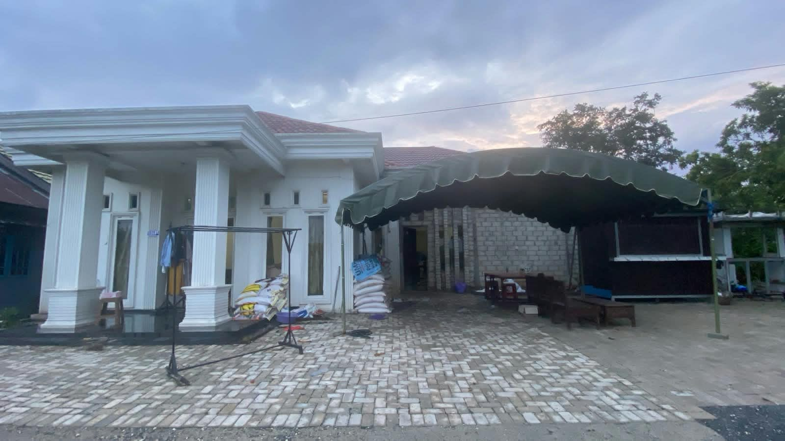
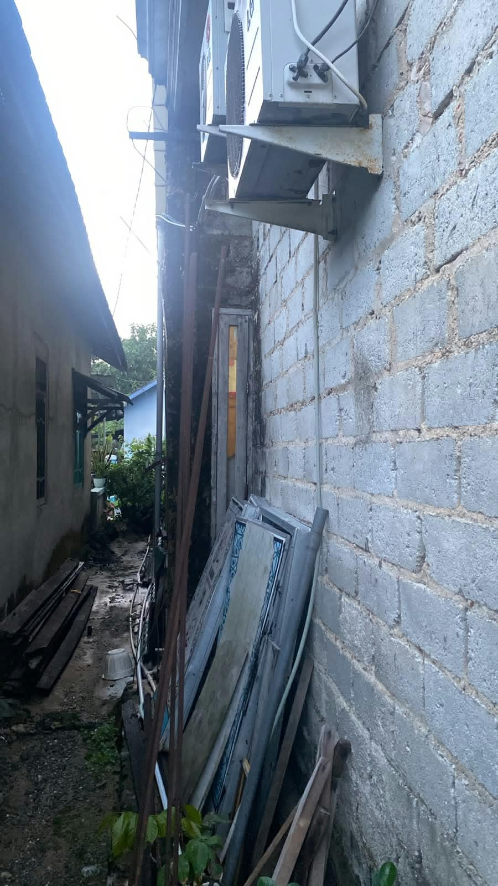

Biodata
Halo! Saya Adell. Saya orang yang sangat ceria.
- Nama lengkap
- Adelia Aisyah Azizah Ahmad
- Nama panggilan
- Adell
- Tempat, tanggal lahir
- Kendari, 03 Agustus 2005
- Jenis kelamin
- Perempuan
- Agama
- Islam
- Alamat
- Bati Bati
- Pendidikan
- Universitas Lambung Mangkurat
- yayalyaa2005@gmail.com
- Telepon
- 0895383422229
Hobi
Memasak
Sangat suka memasak makanan yang digemari.
Mendengarkan musik
Sangat suka mendengarkan musik saat berkegiatan.
Olahraga
Olahraga basket sangat saya sukai.
Traveling
Sangat suka berpergian ke tempat yang seru.
Galeri
Foto

